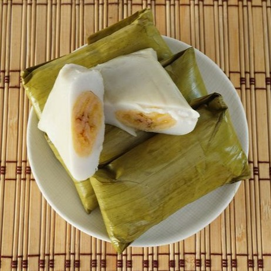

RecTia
Welcome to
RecTia
Resep Membuat
Nagasari
Resep bukan hanya untuk dibaca. Tetapi juga untuk dicoba.
Mari kita coba!

Bahan :
Kelapa 1 buah
Tepung beras 500 gram
Gula pasir 100 gram
Garam 1 sdt
Air 1500 ml
Pisang 25 buah
Cara membuat :
Parut kelapa, lalu peras santannya dengan air. Kemudian rebus santan bersama gula dan garam hingga mendidih.
Masukkan tepung beras ke dalam ember plastik, lalu tuang santan panas, kemudian aduk.
Pastikan tekstur adonan padat tetapi mudah dibentuk.
Siapkan daun untuk membungkus nagasari.
Letakkan adonan sekitar 1 centong nasi ke atas daun, kemudian tekan hingga rata tetapi tidak terlalu tipis.
Letakkan pisang di tengah adonan yang sudah diratakan, kemudian balut pisang dengan adonan hingga tertutup rapat.
Lipat daun pisang. Ulangi hingga adonan habis.
Kukus selama 45 menit
Setelah matang, rapikan bungkus daunnya.
Menurut perkiraan, 1 resep ini dapat menjadi 25 nagasari.